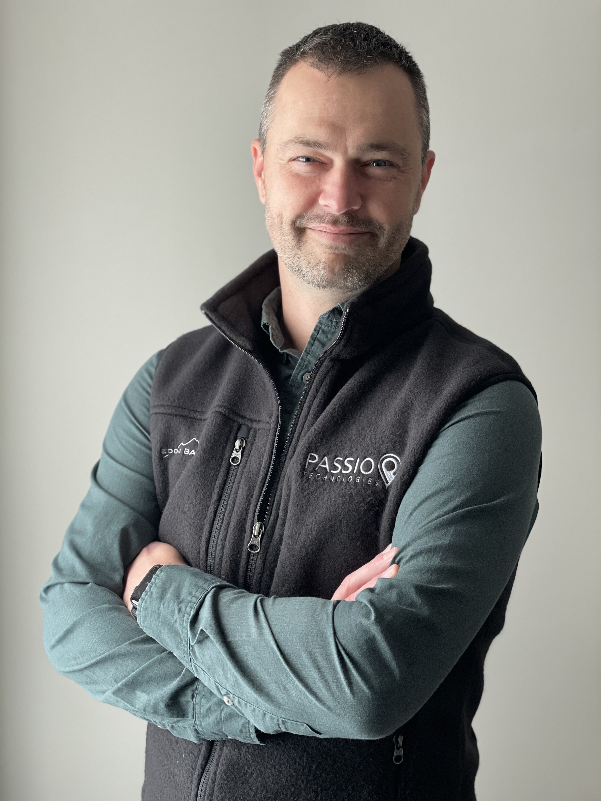

|  |
Tim Hibbard, VP of Innovation at Passio Tech. Email: tim.hibbard@passiotech.com Call/Text: 785-550-1483 My name is Tim Hibbard and I'm Vice President of Innovation and Development at Passio Technologies. Passio creates software and integrates hardware for public transportation agencies. We are located in Atlanta, GA and are part of a larger group of companies related to transportation called Transit Technologies. My main role at Passio is managing product. I am responsible for the development of the software and services that we create. I have been at this role since May 2019, when Passio bought the company that Kyle Archer and I owned, ParaPlan Software, a company that creates Paratransit management software. At ParaPlan Software, I was CEO. A position that I held from 2009 to the sale of the company in 2019. Before I was CEO, I was lead developer, software architect and several other titles since my original employment at the company since 2003. My entire career, 20 years and counting, have been focused on public transportation. When I first started at ParaPlan (then EnGraph), it was a way that I could develop my technology skills, the industry I was in didn't matter. But throughout the years, I have come to believe that public transportation can bring people together. Seeing a city on a bus or a train is an immersive experience and leads to a greater appreciation for your environment. Incidental contact with people at a bus station or a terminal is humanizing and allows for greater empathy. Not even to mention the positive effects on climate change, pollution, and traffic fatalities. My family and I live in Greenville, SC which is a beautiful city in the Southeast. In 2013, we sold everything we could not fit in a pod and our minivan and moved here from Kansas City after spending a weekend in the city while visiting family. Chelsea and I have been married for 15 years. She is the best ever and all I want to do is make her laugh. We have four kids that keep our life very busy and very full. Thank you for taking the time to learn about me. Please reach out if you'd like to connect. |